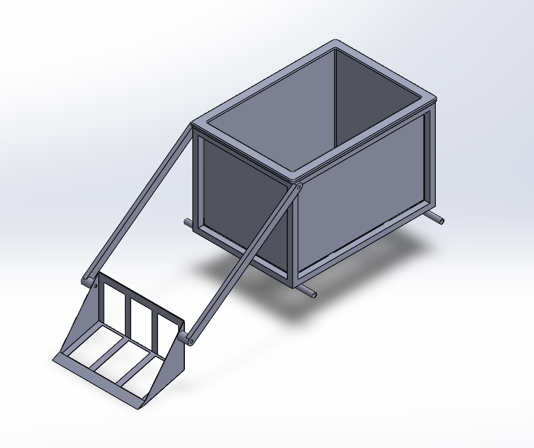
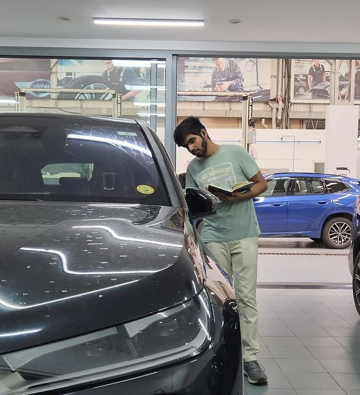
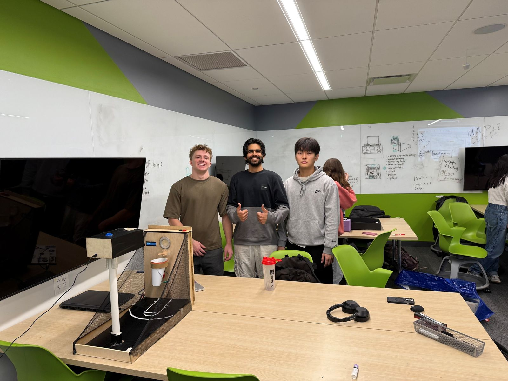
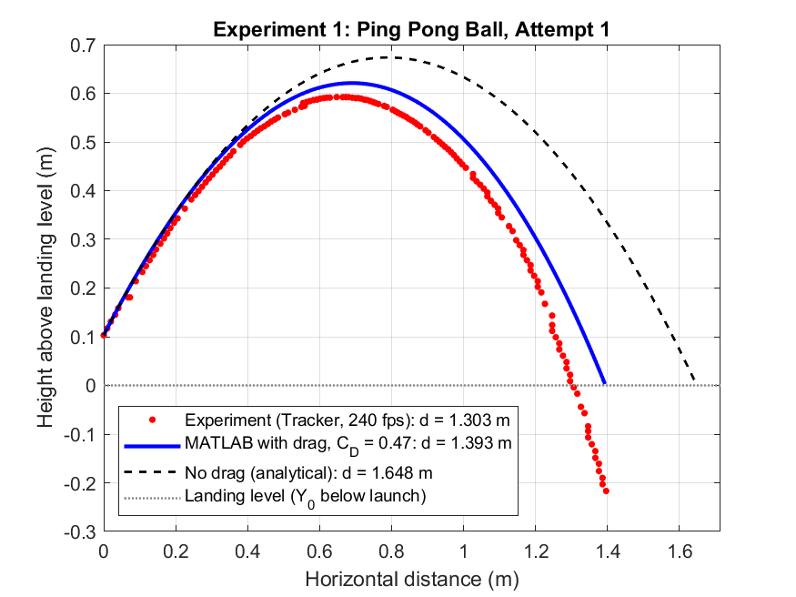

This is the print version of the portfolio: a cover page, then one page for each featured project. To save it as a PDF, use your browser's Print command and choose "Save as PDF".
Tarohnish Kotwal
- Program
- BS in Mechanical Engineering, Northeastern University · expected May 2028
- Availability
- Available for co-op starting January 4, 2027
- linkedin.com/in/tarohnishkotwal
- Website
- tarohnish.github.io
Beach Cleanup Robot: Scoop Lift Arm
- Dates
- Sep 2026 – present (in progress)
- Context
- Mechanical Engineering Design (ME 4550), group design project
- Role
- In charge of all of the arm's analysis so far, including the bending, shear, and torsion calculations (team of five)
- Tools
- hand calculations (stress, and fatigue with modified Goodman) · material selection · SolidWorks (3D model and 2D drawing)
Sized the cantilevered lift arm of a beach-cleaning robot's scoop against six load cases, including a worst-case rock strike, and chose its material for salt-air service.
Key numbers
- Lift arm (cantilever)
- 37.5 in
- Load cases analyzed
- 6
- Worst-case rock strike
- 500 lbf
- Yield safety factor (2.0 required)
- 2.49
- Fatigue safety factor, lift-and-dump
- 1.63

What I did
- Analyzed the arm across 6 load cases with free-body, shear, and bending-moment diagrams.
- Designed for a 500 lbf worst-case rock strike (250 lbf per arm).
- Sized a 2.00 × 1.00 in 6061-T6 aluminum section to a yield safety factor of 2.49 (2.0 required) and a fatigue safety factor of 1.63 for lift-and-dump using modified Goodman.
- Compared 6061-T6 with 5052 aluminum, 7075 aluminum, 316 stainless steel, and A36 steel, and chose 6061-T6 for strength-to-weight and salt-air corrosion resistance.
Result
A 2.00 × 1.00 in 6061-T6 arm that meets the 2.0 yield target (2.49) and holds up in fatigue (1.63 for lift-and-dump). The strike torque is too much for the shaft and gearbox, so the team adopted a frame down-stop.
Full project: tarohnish.github.io/projects/beach-bot-lift-arm.html
BMW Infinity Workshop — Test Engineer Intern
- Dates
- Jun 2023 – Jul 2023
- Context
- BMW Infinity Workshop, Mumbai, India
- Role
- Test engineer intern, working alongside a senior technician as mentor
- Tools
- ICOM/ISSS · ISTA · ISTA/P · AIR · ECU programming · multimeter · refractometer
Troubleshot 50+ cars and owned a three-week water-damage diagnosis on an F56 Mini Cooper S, tracing the fault to battery corrosion at a known battery-tray weak point.
Key numbers
- Cars troubleshot
- 50+
- Water-damage diagnosis
- 3 weeks

What I did
- Troubleshot 50+ cars and reprogrammed BMW ECUs using ICOM/ISSS, ISTA, ISTA/P, and AIR.
- Ran multimeter and refractometer checks.
- Wrote step-by-step repair checklists to standardize shop work.
Result
The root cause was the battery: corrosion from water pooling at a known weak point in this model's battery tray. The fix was a battery replacement.
Full project: tarohnish.github.io/projects/bmw-internship.html
Arcade Basketball Machine
- Dates
- Sep 2024 – Jan 2025
- Context
- Cornerstone Engineering 1 (GE 1501), Northeastern University, team of four
- Role
- Team lead; actuation and electronics: soldering, crimping, and wiring; the solenoid's power supply; the ring light; the servo-mounted obstacles
- Tools
- Arduino (C++) · 12 V solenoid · servo · LED strip and ring light · soldering · crimping · vacuum forming · woodworking
Built the actuation and electronics for a four-person arcade basketball game, from the solenoid's 12 V supply to the ring light and servo-driven obstacles, and kept it running through the full Northeastern Expo.
Key numbers
- Round length
- 60 s
- Solenoid supply
- 12 V, 2 A
- Arduino boards
- 3
- Team size
- 4

What I did
- Soldered and crimped all of the electronics, including the ring-light wiring and extended jumper wires.
- Powered the solenoid: it needed 12 V and 2 A, more than a laptop or breadboard could supply, so I sourced a 12 V adapter and a barrel-jack adapter to run it safely.
- Worked through the overheating that fried two Arduino boards: changed the driver type and the ball mass, and on the third board secured every connection, after which the solenoid ran without issues.
- Designed and built the wooden obstacles mounted on the moving servo.
Result
The game ran through the full Northeastern Expo on three Arduino boards. The team also got the ball to spin down through the hoop, which fixed an earlier scoring flaw. It was most popular with competitive players, some of whom tried to "hack" the game for faster points.
Full project: tarohnish.github.io/projects/arcade-basketball.html
Video-Tracked Drag Coefficient Analysis
- Dates
- Jan 2026 – Feb 2026
- Context
- ME 3456 Lab 1, Projectile Trajectories with Aerodynamic Drag, Northeastern University (team lab)
- Role
- Responsible for the team's MATLAB code and graphing
- Tools
- MATLAB · Tracker video analysis · least-squares curve fitting · finite-difference simulation (the lab's model)
Measured drag from high-speed video (Cd = 0.47) and compared four throws against drag and no-drag models; accounting for drag cut the ping pong ball's range-prediction error from 23–27% to 3–7%.
Key numbers
- Drag coefficient, vertical drop
- Cd = 0.47
- Video frame rate
- 240 fps
- Ping pong range error, no drag → drag model
- 23–27% → 3–7%
- Drag values swept
- 50,000

What I did
- Wrote the team's MATLAB analysis and produced its graphs.
- Swept 50,000 candidate drag values (D = 0.01 to 1.0 1/m) against vertical-drop data and picked the least-squares best fit: D = 0.134 1/m, which gives Cd = 0.47.
- Analyzed two ping pong ball throws and two foam ball throws, filmed at 240 fps and tracked in Tracker.
- Corrected the time base to frame/240 s. Tracker had been left at its 30 fps default, which made every time 8x too long and every velocity 8x too small. A fitted-gravity check on each throw then gave 229–238 fps, confirming the fix.
Result
For the ping pong ball, the drag model cut range error from 23–27% to 3–7%. For the foam ball, Cd = 0.47 over-predicted drag: the model landed about 18% short, while the no-drag model came within 7–8%. A drag coefficient measured on one ball did not transfer to the other.
Full project: tarohnish.github.io/projects/drag-coefficient.html